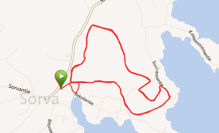

Tervetuloa Sorvaan
Sorva on yksi Nokian kylist�� L��nsi-Suomen l����niss��
Pirkanmaalla, Tampereen seutukunnassa. Sorvan kyl�� kulkee nauhamaisesti
Pyh��j��rven rantaa pitkin. Luoteessa kyl�� rajoittuu Turuntiehen. Nokian
keskustaan on matkaa 3-10 km ja Tottij��rven kyl��keskukseen n. 7 km.
Sorva kuului entiseen Tottij��rven kuntaan vuoteen 1976 asti, jolloin Tottij��rvi
liittyi silloiseen Nokian kauppalaan. Sorva on mainittu jo 1540-luvun
asiakirjoissa. Sarkajaon aikaan kyl��ss�� on ollut viisi taloa: Uotila, Heikkil��,
Rekola, Knuutila ja Mattila. 1776-1805 laaditussa Kuninkaan kartastossa on
merkitty Sorvasta kinttupolku Nokialle. Se on kulkenut nykyisen Sorvantien
paikalla.
Liity kyl��yhdistyksen j��seneksi
Vuoden 2012 j��senmaksu on 5��/aikuinen. Maksun voit suorittaa suoraan
kyl��yhdistyksen tilille 450330-230837 tai yhdistyksen tapahtumissa. Maksaessasi
j��senmaksun suoraan tilille laita viitteeksi oma nimesi.
Kannatusj��senmaksun suuruus yhdistyksille ja yrityksille on 50��.
Kyl��yhdistyksen hankkima oksasilppuri on j��senten k��yt��ss�� (5��/vrk). Varaukset
hoitaa Tapio Wigelius p. 040-8346996.
J��senmaksun maksaneille j��senille Janne Siuvo puh. 0400-626164 suorittaa
j��tekaivon tyhjennyst�� edelleen alennettuun hintaan. Muista tyhjennyst��
tilatessasi mainita kuuluvasi Sorvan Kyl��yhdistyksen j��seneksi.
Hiiht��m����n Sorvassa
Nyt joukolla hiihtelem����n. 3,3 km:n pituinen latu odottelee hiiht��ji��. Ladulle p����see helpoiten Rekolantien alkup����st��.

Tiedotuksesta
Kyl��yhdistys tiedottaa ajankohtaisista kyl��n tapahtumista t��ll�� sivustolla
ja jakamalla tiedotteita muutaman kerran vuodessa. Lis��ksi kyl��n
ilmoitustauluilla tiedotetaan ajankohtaisista tapahtumista.